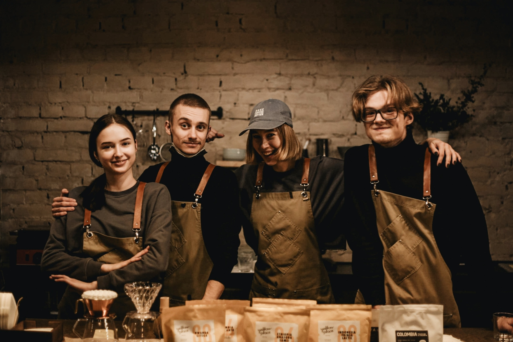
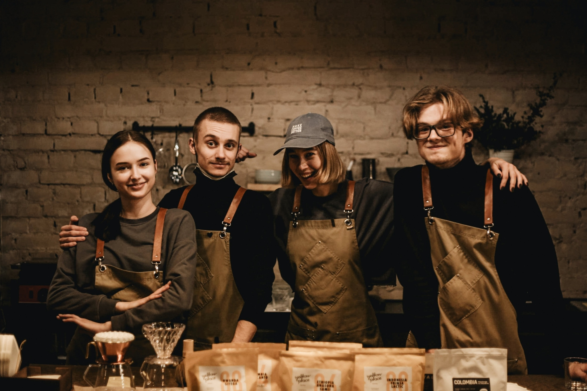

The mission of Java Been is to bring the best locally sourced coffee and goods to their customers.
Java Been was born in 2016. We want our customers to feel at home when they are here. All of our coffee and goods are made with certified organic ingredients. We want to bring only the best to our customers.

 

These are our current teams at our coffee shops. They are all super friendly and ready to help you today.